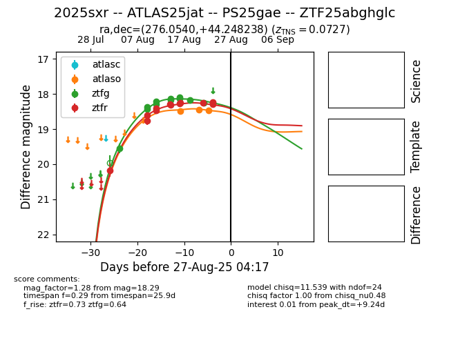

Target 2025sxr at 2025-08-21 11:12, see:
FINK: fink-portal.org/ZTF25abghglc
Lasair: lasair-ztf.lsst.ac.uk/objects/ZTF25abghglc
ALeRCE: alerce.online/object/ZTF25abghglc
TNS: wis-tns.org/object/2025sxr
YSE: ziggy.ucolick.org/yse/transient_detail/2025sxr
alt names
ZTF25abghglc (ztf,alerce)
2025sxr (tns,yse)
ATLAS25jat (atlas)
PS25gae (panstarrs)
coordinates:
equatorial (ra, dec) = (276.0540,+44.24827)
galactic (l, b) = (72.2381,+23.18594)
photometry
last ztfg=18.25, ztfr=18.24
19 ztfg, 15 ztfr detections
